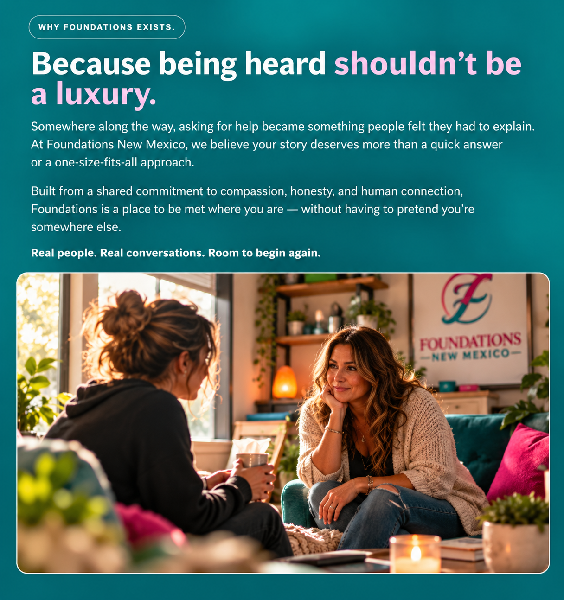

THE PAST CAN HAVE ITS SAY.
IT DOESN’T GET THE LAST WORD.
A place for real conversations, difficult chapters, and the courage to write what comes next.
Compassionate counseling support for children,
teens, adults, couples, and families in Roswell, New
Mexico. A place to slow down, feel understood, and
begin building forward — one honest conversation
at a time.


COUNSELING THAT FEELS HUMAN.
Real conversations. Genuine support.
Meaningful healing
Life gets complicated. Sometimes it gets downright heavy. At Foundations New Mexico, you don’t have to pretend otherwise. We offer compassionate counseling for children, teens, adults, couples, and families navigating life’s difficult chapters. No judgment. No perfect stories required. Just real conversations, genuine connection, and room to move forward.
WHY FOUNDATIONS EXISTS.
Because being heard shouldn’t be a luxury.
Somewhere along the way, asking for help became something people felt they had to explain. At Foundations New Mexico, we believe your story deserves more than a quick answer or a one-size-fits-all approach.
Built from a shared commitment to compassion, honesty, and human connection, Foundations is a place to be met where you are — without having to pretend you’re somewhere else.
Real people. Real conversations. Room to begin again.

TAKE THE FIRST STEP.
Request an appointment
Every strong foundation begins with one step. Complete the form below, and we'll take it from there.
111 West Hobbs St, Roswell, New Mexico 88203elizabeth@foundationsnewmexico.com · (575) 914-6446